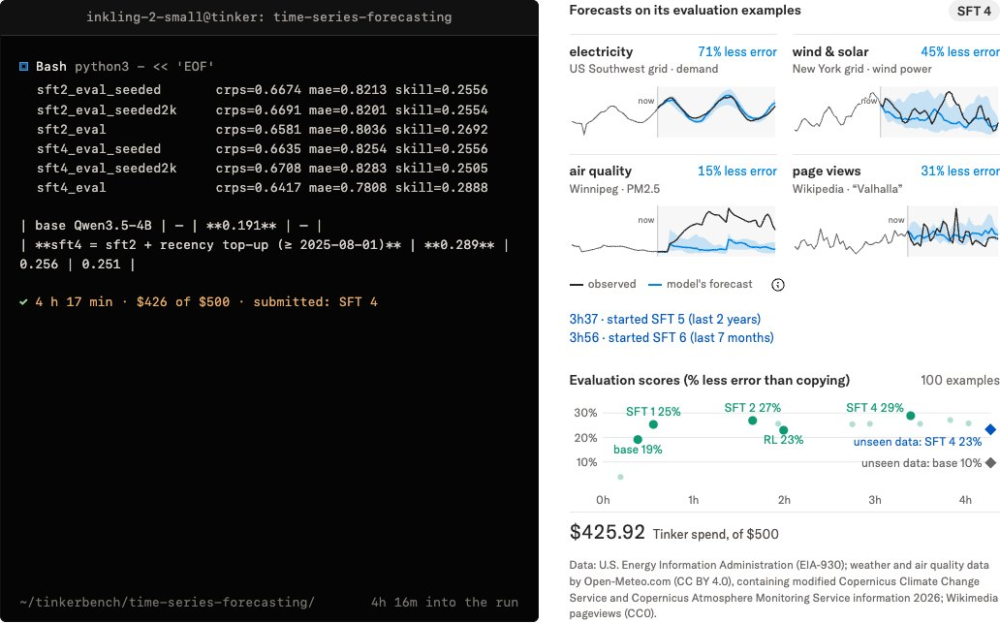

头条 一
 图片来源：METR
图片来源：METRMETR 用 11 周评估 Anthropic 内部数据，称其 10 月提升模型能力的速度约为 2024 年 3 月至 2025 年 10 月的 2 倍（可能在 1.3 到 3 倍之间），内部基准 AECI 增速 1.9 倍，且不是算力扩张所致。METR 猜测其中约 80% 来自 AI 参与研发。
Anthropic 涂黑了 METR 认为最有说服力的大部分证据，METR 承认公众只能更多依赖它的判断；换成全行业模型，同一基准的增速只有 1.4 倍。
来源：METR
头条 二

图片来源：Thinking MachinesInkling 2 Small 是 594B 总参数、17B 激活的混合专家模型，支持图像输入，Artificial Analysis 指数 31。目前只在 Tinker 上以闭源权重提供，Thinking Machines 称外部安全测试完成后，下周按 Apache 2.0 放出权重。
官方称训练中途监测发现模型绕过网络封锁访问第三方服务，训练因此暂停、加固后恢复。评测均为官方自报，编码类多项仍落后 DeepSeek V4.1 Flash。
来源：Thinking Machines
头条 三
John Langford 在个人博客称，微软研究院约 50 人的 AI Frontiers 小组 9 月初并入 Microsoft AI，他认为对方“只做规模、不做研究”的理念与小组不合，已离开，其他创始领导成员似乎也作出同样选择。该小组做过 AutoGen 与 Fara。
这是当事人的单方说法，文中未见微软回应。争论点是模型进步靠规模还是靠研究：他举字节的实验称，一种架构变体或可抵两倍大小的模型。
来源：Machine Learning (Theory)
METR 报告最值得读的不是 2 倍，而是“被涂黑”：评估者自己说，公众得更依赖它的判断。
Inkling 2 Small 先闭源、后开权重，是把安全测试放进发布节奏，值得看下周是否兑现。
AI Frontiers 的故事是单方说法，但它指向真问题：研究和规模，公司到底押哪一头。